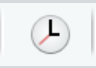

Tracking Changes
Last updated on 2025-10-21 | Edit this page
Estimated time: 20 minutes
Overview
Questions
- How do I record changes in Git?
- How do I check the status of my version control repository?
- How do I record notes about what changes I made and why?
Objectives
- Go through the modify-add-commit cycle for one or more files.
- Explain where information is stored at each stage of that cycle.
- Distinguish between descriptive and non-descriptive commit messages.
We will be working on our amr-data-dictionaryproject and
should be in the amr-data-dictionary directory.
We will be editing the file index.qmd.
We will start by replacing the initial line of text:
This is a Quarto website.
With the following text:
OUTPUT
## About
This web page will provide metadata information about the data files used
for the course Introduction to R, databases and reproducibility for AMR epidemiologists.
Save your changes to the file.
In the Git tab of the upper left panel, we can click on the
Diff icon. This will show changes made to
index.qmd
Git has noticed that there are changes to index.qmd, and
that these are currently unstaged. Currently, Git doesn’t know that it
needs to keep track of these changes.
To do this, we can check the box in the Staged column for
index.qmd
We can see that under status the orange ? has changed to
a green A and in the bottom section the radio button for
Staged is now selected.
Git now knows that it’s supposed to keep track of
index.qmd, but it hasn’t recorded these changes as a commit
yet.
To get it to do that, we need to type a message in the
Commit message box and click on Commit.
On the completion of the commit the following message is
displayed in the terminal:
OUTPUT
>>> /usr/bin/git commit -F /var/folders/1v/6jw6cbqn1sldcbfrc24vj5qm0000gn/T/RtmpRsFsk9/git-commit-message-617d1bbdcbbe.txt
[main (root-commit) a639e37] Added about information for the web page.
1 file changed, 13 insertions(+)
create mode 100644 index.qmd
When we run commit, Git takes everything we have told it
to save by using stage and stores a copy permanently inside
the special .git directory.
This permanent copy is called a commit (or revision) and its short identifier is
a639e37. Your commit may have another identifier.
We use the commit message to record a short, descriptive, and specific comment that will help us remember later on what we did and why.
Good commit
messages start with a brief (<50 characters) statement about the
changes made in the commit. Generally, the message should complete the
sentence “If applied, this commit will”
<commit message here>. If you want to go into more
detail, add a blank line between the summary line and your additional
notes. Use this additional space to explain why you made changes and/or
what their impact will be.
We can select Diff "index.qmd" from the Git dropdowb
menu to show us the current status of the file
index.qmd.

As everything is up to date, a dialogue box appears informing us that there have been no changes to the file.
If we want to know what we’ve done recently, we can ask Git to show us the project’s history using the History option from the Git dropdown menu:
This opens a dialogue box that will lists all commits made to a repository in reverse chronological order. The listing for each commit in the upper pane includes includes the log message Git was given when the commit was created, the commit’s author, when it was created, and the the short identifier.
In the lower pane, we see the same detail for the highlighted commit, however, in this instance the commit’s full identifier is shown.
Where Are My Changes?
If we look in our Files pane, bottom right, of our RStudio window you
will see only 1 version of index.qmd. That’s because Git
saves information about files’ history in the special .git
directory mentioned earlier so that our filesystem doesn’t become
cluttered (and so that we can’t accidentally edit or delete an old
version).
Now suppose we want to add more information to the file. We can open
our file index.qmd, and add the follow text and save the
file:
OUTPUT
Data files:
- gapmider_data.csv
- gapminder_wide.csv
- hgt_wgt.csv
- icd10_data.csv
- dig_health_hub_amr.csvIf we now choose Diff index.qmd from the Git dropdown
menu, our changes will be identified:
index.qmd and the M flag to show that the file
has been modified.In the top left panel an M has appeared in the Status
column next to index.qmd. Also, in the lower panel, the radio button for
Unstaged is selected and the text that we have added is highlighted.
This enables us to review our changes before saving them, which is
recognised good practiced.
We have reviewed our changes and are happy with them, but we haven’t told Git we will want to save those changes, nor have we saved them. So let’s do that now.
Let’s enter the following Commit message and click on Commit:
OUTPUT
List of project data files addedWhoops: Git won’t commit because we didn’t use git add
first. Let’s fix that:
Checking the Staged box in the Git tab for index.qmd has
“added” the file. Notice also, that the M has moved from
the right-hand status column to the left-hand column.
We can now,Commit the change successfully.
Git insists that we add files to the set we want to commit before actually committing anything. This allows us to commit our changes in stages and capture changes in logical portions rather than only large batches.
For example, suppose we’re adding a few citations to relevant research to our thesis. We might want to commit those additions, and the corresponding bibliography entries, but not commit some of our work drafting the conclusion (which we haven’t finished yet).
To allow for this, Git has a special staging area where it keeps track of things that have been added to the current changeset but not yet committed.
Staging Area
If you think of Git as taking snapshots of changes over the life of a
project, checking Staged (git add) specifies
what will go in a snapshot (putting things in the staging
area), and Commit(git commit) then
actually takes the snapshot, and makes a permanent record of it
(as a commit). If you don’t have anything staged when you try to
Commit, Git will prompt you to use
git commit -a or git commit --all, which is
kind of like gathering everyone to take a group photo! However,
it’s almost always better to explicitly add things to the staging area,
because you might commit changes you forgot you made. (Going back to the
group photo simile, you might get an extra with incomplete makeup
walking on the stage for the picture because you used -a!)
Try to stage things manually, or you might find yourself searching for
“git undo commit” more than you would like!

git add
registers changes in the staging area, while git commit
moves changes from the staging area to the repositoryLet’s watch as our changes to a file move from our editor to the staging area and into long-term storage.
First, let’s modify our data files list by changing
dig_health_hub_amr.csv to
dig_health_hub_amr_v2.csv:
If we select Diff index.qmd our change will be
highlighted:
So far, so good: we’ve replaced one line (shown with a -
in the first column) with a new line (shown with a + in the
first column).
We also have a new options: Stage chunk and Discard chunk.
As we want to stage our changes, we will click on
Stage chunk.
Let’s save our changes:
and look at the history  of what we’ve done so far:
Directories
Two important facts you should know about directories in Git.
- Git does not track directories on their own, only files within them.
Try it for yourself, create the following direcyories within amr-data-dictionary: - gapminder - dhh-amr - hgt-wgt - icd10
Note, our newly created empty directory gapminder does
not appear in the list of untracked files even if we explicitly add it
(via git add) to our repository. This is the
reason why you will sometimes see .gitkeep files in
otherwise empty directories. Unlike .gitignore, these files
are not special and their sole purpose is to populate a directory so
that Git adds it to the repository. In fact, you can name such files
anything you like.
- If you create a directory in your Git repository and populate it
with files, you can add all files in the directory at once by selecting
Stage All.
To recap, when we want to add changes to our repository, we first
need to add the changed files to the staging area (git add)
and then commit the staged changes to the repository
(git commit):

Choosing a Commit Message
Which of the following commit messages would be most appropriate for
the last commit made to index.qmd?
- “Changes”
- “Changed dig_health_hub_amr.csv for dig_health_hub_amr_v2.csv”
- “Corrected file names in data files list”
Answer 1 is not descriptive enough, and the purpose of the commit is unclear; and answer 2 is redundant to using “git diff” to see what changed in this commit; but answer 3 is good: short, descriptive, and imperative.
-
Diffshows the status of a repository. - Files can be stored in a project’s working directory (which users see), the staging area (where the next commit is being built up) and the local repository (where commits are permanently recorded).
-
Stageputs files in the staging area. -
Commitsaves the staged content as a new commit in the local repository. - Write a commit message that accurately describes your changes.